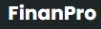
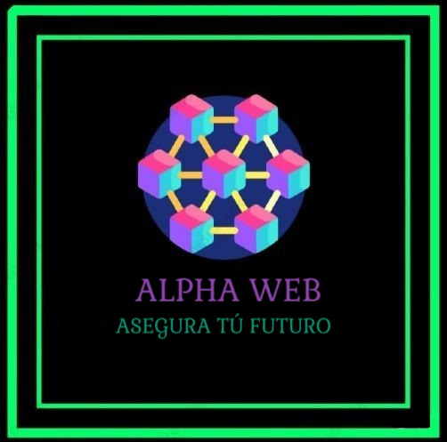
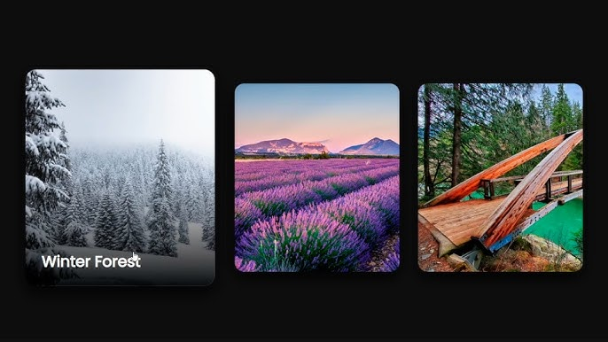

Proyectos Destacados
ICICO
Página web profesional de Iglesia Cristiana con manejo de Contenido Multimedia, interfaz moderna.

FINANPRO
Sitio web profesional de asesorías financieras con manejo de base de datos e interfaz moderna. Solución: Backend robusto con PostgreSQL para gestión financiera.
VIVAESHOP
Página web estática para tienda de moda femenina con diseño moderno y visual atractivo. Solución: E-commerce frontend optimizado para conversión.

ALPHAWEB
Plataforma de seguridad informática con generador de contraseñas, pruebas automatizadas y herramientas de análisis. Solución: Suite de seguridad con testing automatizado y análisis de vulnerabilidades.
Pruebas de Seguridad
Conjunto de análisis y validación de vulnerabilidades mediante Pytest, Unittest y Bandit. Solución: Framework de testing automatizado para detección de vulnerabilidades.
TWITTER2
API estilo Twitter conectada a base de datos NoSQL para gestión de publicaciones. Solución: API RESTful con MongoDB para escalabilidad.
TALLER SQL
Ejercicios y consultas avanzadas con SQL Server integrados con Python. Solución: Sistema de análisis de datos con consultas optimizadas.
Ajedrez
Juego de ajedrez completo con lógica detallada de movimientos y validaciones. Solución: Algoritmo de lógica de juego con testing exhaustivo.

Tarjetas Interactivas
Sistema de tarjetas interactivas con animaciones para uso educativo y demostrativo. Solución: Componentes UI interactivos con animaciones CSS.